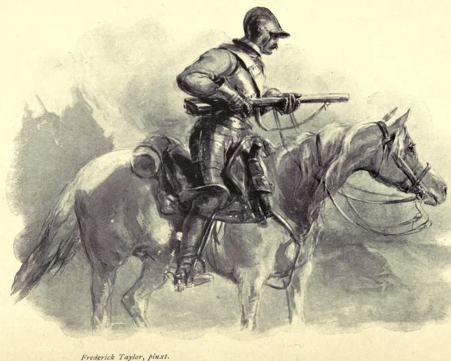
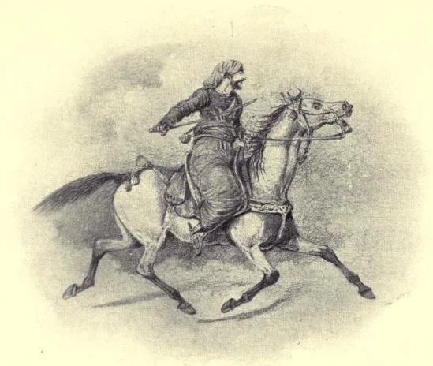
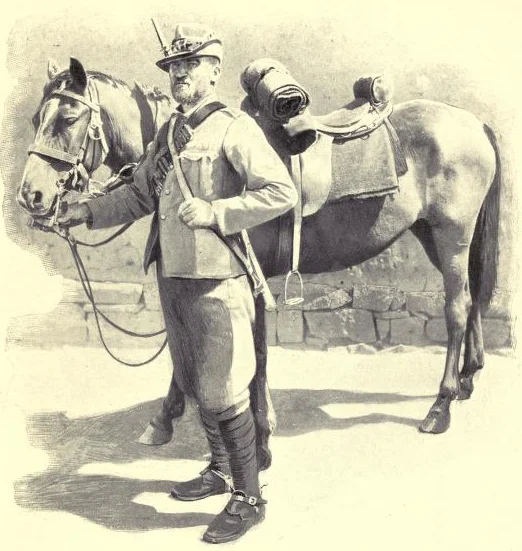
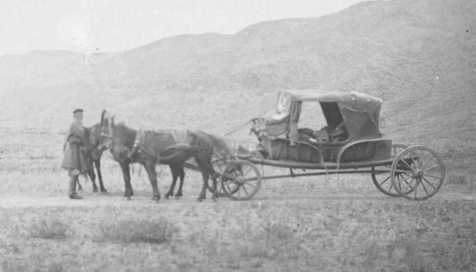
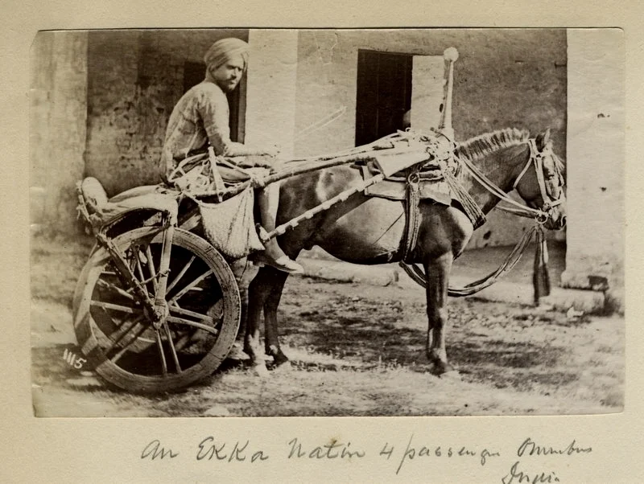
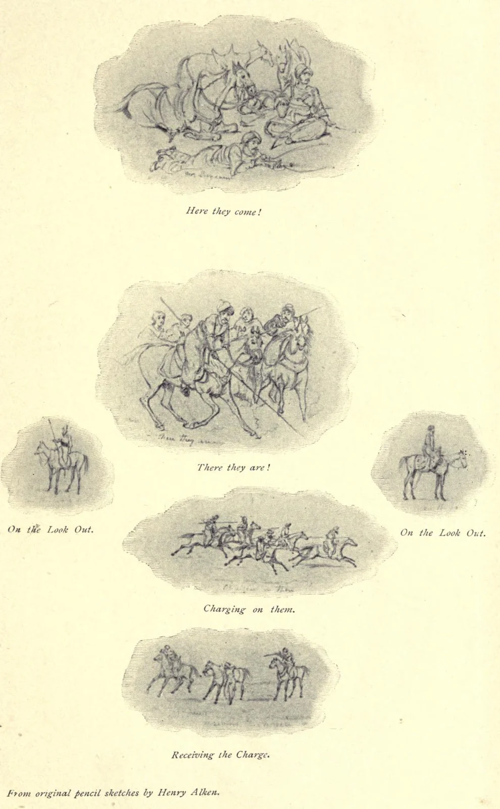
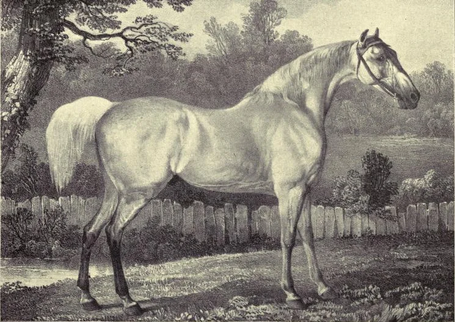

Sir Walter Gilbey, Bart.

Őrjáraton
Vinton & Co., Ltd.
9, New Bridge Street, London, E.C.
1900
Fordította: Dr. Szebényi Tibor
www.gportal.hu/nomadok
www.lovasharc.hu
A forrás megjelölésével szabadon felhasználható.
Az eredeti angol mű (Small Horses in Warfare) az archive.org weboldalról letölthető.
A mértékegységekrőlIgen sok adat szerepel ebben a könyvben, mégpedig az 1900-ban használt angolszász mértékegységekkel párosítva, ezért szükségesnek érzem, hogye témát néhány szóval kommenáljam.
A szövegben a könnyebb érthetőség kedvéért a mi mértékegységeinkre (SI) átváltva írom az adatokat, mögé pedig zárójelben feltüntetem az eredeti angol szövegben szereplő adatot. Így bárki leellenőrizheti.
( Ennyi szám mellett esetleg előfordulhat, hogy hibázok.)Hosszúság
1 Marok (hand) = 10,16 cm
A legfontosabb mértékegységünk, az angolszász világban ebben mérik a lovak marmagasságát. Nehéz helyzetben vagyunk, mert az ókori Egyiptomból ered, és 1900-ban még nem volt egységesítve. Egy marok a kéz szélessége (a tenyér szélessége a mellézárt hüvelykujjal együtt), ami négy hüvelyk. Ez átlagemberek esetén is 9-11 cm között szóródik. Mivel 1959-ben egységesítették a hüvelyk mértékegységet (25,4 mm), a marok is konkrét egység lett, mégpedig 10,16 cm. Az átváltásaimnál ezt vettem alapul, a kapott méretek is egybevágnak a kislovak világában szerzett tapasztalataimmal.
1 Hüvelyk (inch) = 25,4 mm
Ahogy fentebb írtam, 1959 óta hivatalosan ennyi, előtte szintén nem volt egységes, de csak mm-es eltérések voltak.
1 Mérföld (mile) = 1609 m
Könnyebb a helyzet, már 1592-ben is 1609 m volt, 1959-ben 1609,344 m-re egységesítették. Én maradnék az egész számnál, így is igen szépek a lovasok teljesítményei.
1 Láb (foot)=30,48 cm1 Furlong (furlong)=201,168 m1 League=3 mérföld (4,8 km)1 Yard=0.9144 m
1 Parasang = 6 km
Perzsa mértékegység, az a távolság, amit a ló lépésben megtesz egy óra alatt.
Tömeg
1 Font # (pound) = 0,453 kgCsupán gramm nagyságrendben változott az idők folyamán.
1 „Kő” (stone) = 6,35 kg
1 cwt (hundredweight) = 112 font = 50,8 kg
Űrmérték
1 Gallon (gallon) = 4,546 l
A fordító
Előszó
Eljött az ideje annak, hogy tényekkel támasszuk alá a kislovak alkalmasságát az olyan hadjáratokra, melyek keménységet, nagy állóképességet és a gyenge takarmányozás elviselését kívánják. Annak kapcsán, hogy a hadsereg külföldről kénytelen ilyen lovakat beszerezni a dél-afrikai háborúhoz, illő kiemelni, hogy itt Angliában is rendelkezünk olyan állománnyal, melyből létrehozhatunk hasonló, vagy még jobb kisló fajtát, mint amit idegen országokból vagyunk kénytelenek behozni.
Elsenham Hall, Essex
1900 májusa
Kislovak a hadviselésben
A dél-afrikai háború nem hagyott kétséget a felől, hogy szükség van egy, a búrokéhoz hasonlóan erős sereg felállítására. Csapataik gyors mozgása megmutatta nekünk ezeknek a könnyűlovasság és a lovasított gyalogság számára megfelelő lovak harci értékét.
A háború kitörése óta elég emberrel rendelkezünk, aki tud lőni és lovagolni, és kevés kiképzéssel is értékes katonákká válhatnak. Azonban mindig is nehézkesen tudtuk ellátni őket a munkájukhoz megfelelő lovakkal. Dél-afrikai tapasztalataink megerősítették a krími háborúban szerzetteket, miszerint az Angliából kiküldött lovak nem bírták az éghajlatot, a szegényes takarmányozást és más viszontagságokat, míg a helyi kistermetű lovak és a még keletebbre tenyésztettek sokkal kevésbé szenvedtek ezektől a körülményektől. Bebizonyosodott, hogy ezek a kis lovak kemények és kitartóak, továbbá, a mi angol telivéreinkhez hasonlóan bennük is meglévő erős arab hatás miatt, elég gyorsak is a könnyűlovasság céljaira.
A Shetland pónit és a pólópónikat tenyésztő kevesek kivételével minden lótenyésztő egyre magasabb lovakat akart generációk óta. Nincs is semmi kivetnivaló ebben bizonyos esetekben; a 162,5 cm (16 marok) magas telivér hosszabb lépésével valószínűleg legyőzi a versenypályán a 154,4 cm (15,2 marok) magasat; a 162,5 cm (16 markos) kocsislóért többet fizetnek, mint az ugyanolyan, de alacsonyabbért; és a 164,6 cm (16,2 marok) vagy 172,7 cm (17 markos) Shire arányosan erősebb és nehezebb, mint egy kisebb ló, ami kívánatos ennél a fajtánál. Így tehát jól meg tudjuk magyarázni, miért törekedtünk legértékesebb fajtáinknál az egyre nagyobb marmagasságra; de mivel rég kényszerültünk arra, hogy katonai erőnket helyezzük előtérbe, szem elől tévesztettünk sok más fontos tulajdonságot.
Noha az átlagemberek nem tudják, vagy nem ismerik fel, a tenyésztők és lovasok jól tudják, hogy a ló nagyobb magassága nem feltétlenül jár együtt nagyobb erővel más szempontból, mint pl. a teherbírás vagy állóképesség. Általában elfogadjuk a mondást, miszerint egy jó nagy ló jobb, mint egy jó kis ló, de a hasznos tulajdonságok, melyek egy hadjárathoz kellenek, a kislovak között sokkal gyakoribbak.
Minden utazó, felfedező és hadjáraton részt vett katona egybehangzó véleménye az, hogy a 134,11 – 144,27 cm (13,2 és 14,2 marok) közti marmagasságú lovak a legmegbízhatóbbak hosszú kemény munkákhoz rossz takarmányozás mellett.
Lovak a krími háborúbanA krími háború alatt rövid ideig Abidoszban, Kis-Ázsiában állomásoztam, a Dardanellák partján, ahol naponta volt alkalmam megfigyelni nagyjából 3000 basibozuk (balkáni-kis-ázsiai népfelkelő) és örmény lovas manővereit és hátasaikat. Beatson tábornok parancsnoksága alatt folyamatos készültségben álltak, várva az indulást a Krímbe, ami végül el is jött.
E csapatok lovai 142,24 - 145,28 cm (14-14,3 marok) marmagasságúak voltak; mindegyik erős arab hatást mutatott, és lovasaikkal együtt a szigetekről érkeztek. Tökéletesen megfeleltek a könnyűlovasság céljaira. Meglepő volt a takarékosság, ami a takarmányozásukat jellemezte: az alapjában véve szecskázott szalma és naponta egy kis adag árpa, ha elérhető volt, de ez nem volt mindig jellemző; és ezen a takarmányon megtartották a kondíciójukat, noha olyan utakat teljesítettek, ami hamar tönkretette volna a brit hadsereg legjobb lovát is.

Basibozuk
Fokföldi lovakHa mindennapi munkáról van szó, Dél-afrika lakói általában a külföldi lovak behozatala ellen vannak, mert az import állatok nem bírják az éghajlatot, a kemény életkörülményeket, a rossz terepet, és a nehéz munkát, ami a gyarmati lovak életét jellemzi.
Az elmúlt években, a jelen háború előtt, nagyszámú angol lovat küldtek harctéri szolgálatra Natal tartományba, de az eredmény közel sem volt kielégítő; az összes ló használhatatlanná vált, nagy többségük el is pusztult; az angol istállókból, angol tartásmódból a gyarmati tartásra váltás szinte kivétel nélkül végzetesnek bizonyult.
Nagyjából öt éve beszélgettünk Cecil Rhodes úrral a lehetőségről, miszerint angol ménekkel javítanánk fel a fokföldi állományt, de ő ellene volt az ötletnek. Kiemelte, hogy a túltenyésztett és nagyméretű lovak alkalmatlanok a gyarmati munkára; több odafigyelést, jobb takarmányt, ápolást és tartást igényelnek, mint amit a dél-afrikai élet megenged a gazdáknak. A nehéz terepen teljesített hosszú utak, a szélsőséges meleg és hideg, amit minimális vagy semmilyen menedékkel kell elviselniük, elkerülhetetlenül letörné az angol luxusban generációk alatt lecsökkent állóképességüket.
Rhodes úr szerint az angol vér nem erősítené a helyi kis fajtát, már ami a munkát illeti; igaz, hogy a telivér hatás növelné a marmagasságot és a gyorsaságot, de az olyan fontos tulajdonságok árán, mint az állóképesség és a takarmányozás iránti igénytelenség.
Mégis fontolóra kell venni, hogy fokozatosan, a jó vér a fokföldi fajta hasznára válhat hosszú távon. Ha csak olyan lovakat használnánk, melyek hozzászoktak a körülményekhez, az eddigieknél jobb eredményeket érhetünk el. A gyarmati körülmények között tenyésztett utódok örökíthetik a jó tulajdonságokat, míg megtartják a helyi fajta keménységét.
Kislovak SzudánbanP. H. S. Barrow ezredes egy igen érdekes és sokatmondó jelentést adott a Hadügyminisztériumnak az arab lovakról, melyeket csapatával, a 19. huszárezreddel használt 1885-ben a nílusi hadjáratban. Ezt a jelentést John Biddulph ezredes munkájának (The XIXth and their Times (1899)) függelékében publikálták.
Biddulph ezredes szavai szerint a tapasztalat azt mutatta, hogy az angol lovak nem bírják a kemény munkát a trópusi nap alatt, kevés víz és sivatagi ellátás mellett.
Ezért úgy döntöttek, hogy Kairó elhagyása előtt az egész ezredet kisméretű szíriai arab lovakra ültetik, amilyeneket az egyiptomi lovasság is használt. Háromszázötven ilyen kis lovat szereztek be gyorsan és adták át az ezrednek, mikor Wady Halfába érkeztek. Barrow ezredes így írja le ezeket az állatokat:
„Arab mén. Átlagos magasság 142,24 cm (14 marok); átlagos kor 8-9 év; kb. 15 százalék 12 évnél idősebb; az egyiptomi kormány vásárolta őket Szíriában és Alsó-Egyiptomban; átlagos áruk 18 font.”
Nagyjából a lovak fele teljesítette az egész hadjáratot az ezreddel Kelet-Szudánban 1884 februárjától márciusig, és igen kimerült állapotban érkeztek vissza.
Ugyanaz év szeptemberében Asszuánból Wady Halfába hajtották a lovakat, 338 km-t (210 mérföld) téve meg; és mikor novemberben újra átadták őket a 19. ezrednek, 10 százalékot kivéve igen tisztességes „menetkondícióban” voltak.
Wady Halfából az ezred Kortiba vonult, 579 kilométernyire (360 mérföld), naponta 25,7 km-t (16 mérföld) megtéve, nem számítva egy egynapos és egy kétnapos megállót; a takarmány 2,7 kg (6 font) árpából vagy dhórából (Ázsiában és Dél-Európában termesztett kölesféle) és 4,53 kg (10 font) dhóra szárból állt; és ez az elég gyenge fejadag mellett igen jó kondícióban érték el Kortit. Itt 18 napig maradtak, és 3,6 kg-nyi (8 font) zöld dhóra szárat kaptak a száraz helyett; a pihenés és a zöldtakarmányra váltás tovább javította kondíciójukat.
Míg a csapat nagy része Kortiban pihent, egy 50 fős különítmény Gakdulba lovagolt felderítés céljából, 161 km-nyire (100 mérföld); 63 óra alatt értek oda, 15 órát pihentek Gakdulban, majd ugyanannyi idő alatt értek vissza. A csapatból hatan még gyorsabban tették meg az utat, 161 km-t 46 óra alatt, ebből az utolsó 80,4-et hét és fél óra alatt. E menetek alatt a lovakat 83 órán át lovagolták, a maradék 58 órát a pihenők tették ki.
Amint a felderítőcsapat január 5-én visszatért, az ezred 8 tiszttel és 127 emberrel, 155 lóval elindult 8-án, Sir Herbert Stewart tábornok hadoszlopát kísérve át a sivatagon, Gubatba. Ez az út 540 km (336 mérföld) volt, január 8-tól február 20-ig tartott, az utolsó napon csak 1 órát lovagoltak, 6,4 km-t (4 mérföld) megtéve. 13-án Gakdulban megálltak; ebből következően átlag napi 42 km-t (26 mérföld) tettek meg, vagy ha nem számítjuk a január 20-i menetet (6,4 km egy óra alatt), akkor 45 km (28 mérföld) naponta. A legnehezebb nap 16. volt, amikor az ezred 64,3 km-t (40 mérföld) tett meg 11 és fél óra alatt, 4:30-16:00-ig, mialatt a lovak 2,27 l (fél gallon) vizet és 1,8 kg (4 font) abrakot kaptak. Ez a kéthetes menet próbára tette a munkaképességüket rossz takarmányozás mellett. Az átlagos napi adag az első tíz napban 2,26 - 2,72 kg (5-6 font) abrak és 9 l (2 gallon) víz volt; a lovak a 13-i gakduli pihenőt kivéve napi 50 km-t (31 mérföld) tettek meg.
A végső menetben a Nílusig a lovak 55 órát mentek víz nélkül, 0,453 kg (1 font) abrakkal; 15-20 ló 70 órát ment víz nélkül. A gubati pihenő alatt, január 20-február 14-ig, egyszer kaptak 2,7 kg-nyi (6 font) abrakot, két nappal a Nílushoz indulás előtt. Ez idő alatt őrjáratoztak, átlagosan 13 km-t (8 mérföld) menve naponta.
A visszaút 402 km-ét (250 mérföld), Dongola és Wady Halfa között, átlag napi 25,7 km-es (16 mérföld) menetekkel tették meg, egy kétnapos pihenő közbeiktatásával. Ezt az utat többnyire éjszakánként tették meg, a hűvösebb idő miatt, de az árnyas helyek hiánya miatt végig ki voltak téve a nap sugarainak.Barrow ezredes megjegyzi, „úgy vélem, figyelemre méltó dolog az, hogy a kilenc hónapos kemény hadjárat alatt a 350 lóból csupán 12 pusztult el betegségben.” Biddulph ezredes így foglalja össze pár szóban a lovak munkáját:
„a kis arab lovak teljesítménye, mind a folyó mentén, mind a sivatagban, nehéz terhet cipelve, kevés takarmányért és kevés vízért cserébe, az állóképesség mintaképe.”
Az előbbi tiszt a betegségek miatti elhullások alacsony számát egyrészt annak tudja be, hogy Szudán éghajlata megfelelő a lovaknak, másrészt a szír lovak szervezete csodálatos és tökéletes a hadviselés céljaira a keleti éghajlaton. Barrow ezredes véleményét ne úgy értsük, hogy ez az éghajlat minden lófajta számára megfelelő. Biddulph ezredes előző oldalon olvasható tapasztalata alapján az angol lovak nem képesek elviselni a szudáni hadjáratok körülményeit.
Sir Richard Green Price, aki a „Határvidéki” álnéven ír a Baily's magazinban, sürgeti egy ezred felállítását lilliputi lovakkal. Véleménye szerint 152,4 - 167,6 cm-nél (5 láb vagy 5 láb 6 hüvelyk) alacsonyabb és 69,85 kg-nál (11 stone) könnyebb, széles mellkasú lovasokat kellene alkalmazni. Őket ültetné 144,27 cm-nél (14,2 marok) alacsonyabb lovakra és felszerelné könnyű fegyverzettel. Ahogy írja, tanácsos lenne fejleszteni a lovasságunk, és egy ilyen csapat gyors és hasznos segítség lehet bizonyos esetekben:
„Miután éveken át megtapasztaltam, mire képesek a pónik, főleg a gondosan tenyésztettek, ki merem jelenteni, hogy kétszer akkora lovakat is képesek legyőzni, és a jelenlegi lovasságunk állatai közül csak nagyon kevés tudná tartani a lépést velük egy hadjáraton – könnyebben taníthatóak, kezelhetőek és megülhetőek, mint a nagyobb lovak, továbbá kétszer olyan ellenállóak és háromszor olyan éberek – a hozzájuk illő lovasokkal mi az akadálya alkalmazásuknak?”
Richard úr, röviden, olyan felderítő vagy lovasított gyalogezred felállítását szorgalmazza, mely lovai a Barrow ezredes által leírtakhoz hasonlóak.
A Modder folyó mentén állomásozó egység kapcsán, mely valószínűleg fontos szerepet játszik majd a további harcokban, a Time magazin különtudósítója így ír a telepesek és a búrok által használt lovakról:
„Itt Dél-Afrikában, a helyi kisló könnyen kezelhető, tüzelés közben is a helyén marad, ha bedobják a szárat, így már eleve félig kiképzett, nincs is szükség komoly idomításra; míg Afganisztánban, és más helyeken, ahol a lovasított gyalogság kevésbé volt kipróbált, a fő problémájuk a hátasaikkal voltak.”
A dél-afrikai pónikat megülő telepes felderítők és lovasított gyalogosok a szavannai vadászatokon szereztek gyakorlatot, a háborúéhoz hasonló körülmények között. Óriási különbség van az így tanított állat és a beteges indiai fajták között, melyeket elrontott a helyiek durva lóhasználata. Az afganisztáni lovasított gyalogságnak sok problémát okozhatnak ezek az állatok.

Remington egyik lova,
a dél-afrikai háború felderítői és lovasított gyalogosai által használt lótípus.
Burnaby útja KhivábaBurnaby parancsnok ismert művében, az „Út Khivába”-ban így írja le a jószágokat, amiket elé vezetnek Kasalában, Türkesztánban, miután közölte, hogy lovat szeretne venni:
„Hogy úgy mondjam, a lovak minden porcikájukban a legrondábbak voltak, ha a kinézetüket kell leírnom. ... Leszámítva hihetetlen soványságukat, inkább óriási új-foundlandi kutyáknak tűntek, mintsem a ló faj képviselőinek, és ahogy előhozták őket a tél mélyéről, semmi más fedél nem volt a fejük felett, mint a természet adta vastag bundájuk. ... Végül, miután elutasítottam jópár gebét, melyek ránézésre inkább csak a csizmám hordozására lettek volna képesek, kiválasztottam egy kicsi fekete lovat. Nagyjából 142 cm (14 marok) magas volt, 5 fontért vettem meg lószerszámmal együtt, ami nagyon magas árnak számít Kasalában.”
Fel kell hívni a kedves olvasó figyelmét, hogy 1876-1877 tele, mikor Burnaby parancsnok véghezvitte izgalmas utazását, még a világ azon felén is kivételesen zordnak számított, pedig arra a hosszú és kemény telek a megszokottak. Indulása napján Kasalában -22 ˚C fokot mutatott a hőmérő (-8 Fahrenheit). A parancsnok egyáltalán nem volt elégedett lova adottságaival, amit a legkevésbé rossz alapon választott ki, és a helyi vezetők is azon a véleményen voltak, hogy nem bírja majd nehéz, jól felöltözött lovasát.
A második menet után Burnaby parancsnok tiszteletet kezdett el érezni a ló iránt:„A reggeli menet után igencsak meglepett lovaink állóképessége. A vezetőt gyakran leparancsoltam, hogy tisztogassa ki a lovak orrlyukát, mert az tele volt jégkristályokkal; de az állatok kitartóan küzdötték át magukat a havon. ... Amelyiken én ültem, és amelyikből Angliában azt se nézték volna ki, hogy képes a csizmáimat elvinni, 27,3 km-nyi (17 mérföld) menet után ugyanolyan friss volt, mint induláskor. A hátán ülő súly ellenére – majd 127 kg (20 stone) – egyszer sem mutatta a fáradtság legkisebb jelét sem.”
Pár nappal később, hasonlóan kemény körülmények között:
„Jana Darya-ból 64,4 km-t (40 mérföld) lovagoltunk megállás nélkül. Be kell vallanom, lenyűgözött a kirgiz lovak állóképessége. Immár összesen 483 km-t (300 mérföld) tettünk meg; és kicsi hátasom, csontvázszerű kinézete ellenére, ugyanúgy visz most is, mint ahogy elhagytuk Kasalát, igaz ehhez az is hozzájárult, hogy én fű helyett árpával etetem. Nagyon nagyra vagyunk angol lovainkkal, és megérdemelten, amíg békéről van szó; de ha az állóképesség is szempont, kétlem, hogy nagy, jól táplált lovaink fel tudnák venni a versenyt a kicsi, félig éhenhalt kirgiz jószágokkal. Ezt nem szabad elfelejtenünk jövőbeni keleti ténykedésünk során.”
Nyilvánvaló, hogy Burnaby parancsnokot meglepte egy lófajta teljesítménye, melyből nem sokat nézett ki; a jobb takarmányozással próbálja magyarázni a sikeres meneteket, és elkezdi összehasonlítani a kirgiz lovak állóképességét az angol lovakéval, immár kételkedve abban, hogy utóbbiak felsőbbrendűek. Később már csodálkozás nélkül számol be arról, hogy csapata 64,4 km-t (40 mérföld) tett meg 6 óra alatt, végig lassú ügetésben. A visszaúton, mikor Petro-Alekszandrovszkban állomásoztak, kilovagolt egy egynapos vadászatra egy kis pej lovon, ami alig volt 142,2 cm (14 marok) magas; így írt róla:
„...úgy táncolt alattam, mintha egy pehelykönnyű zsokét vitt volna a Cambridgeshire versenyen.”
A kirgiz és Buharából való kísérői úgy vélték, túl nehéz lesz a lónak, így kíváncsian ugratta neki hátasát egy ároknak, hogy megnézze, mit tud. „Soha meg nem botlott ... ez a kicsiny jószág még Daniel Lambertet is elvitte volna, ha ezt az értékes de túlsúlyos úriembert feltámasztanák erre az alkalomra.”
Végezetül, Burnaby parancsnok így foglalta össze a 14 markos ló teljesítményét:
„597 km-t (371 mérföld) tettünk meg összesen, pontosan 9 nap és 2 óra alatt, vagyis naponta átlag több, mint 64,4 km-t (40 mérföld) lovagoltunk! Azt sem szabad elfelednünk, hogy ezt megelőzően a lovam 804,5 km-en (500 mérföld) át vitt engem, nem több, mint összesen 9 nap pihenővel. Londonban, a mérete alapján pólópóninak minősítenék. A 127 kg (20 stone) súly ellenére, amit cipelt, soha nem betegedett meg, nem sántult le az út alatt, és az utolsó 27,3 km-t (17 mérföld) a hóban vágtatva tettük meg Kasaláig, 1 óra 25 perc alatt.”
A parancsnok ír még egy másik erőltetett menetről, amit Borkh gróf vitt véghez 1870 nyarán Orosz-tatárföldön. A gróf feladata az volt, hogy kísérelje meg a tüzérség mozgatását egy bizonyos terület nehezen járható részein. Csapata 150 kozákból, 60 lovasított lövészből és egy ágyúból állt. 6 nap alatt tették meg az utat, oda-vissza, 428 km-t (266 mérföld); rendkívüli hőség volt, a hőmérséklet többször elérte a 47,2 °C-ot (117 Fahrenheitet); a kislovak mégse voltak teljesen kimerülve, az út végén a „beteg listán” csupán 12 állat szerepelt, azok is mind figyelmetlen nyergelés okozta hátsérülés miatt.
Más, hasonló körülményű expedíciókat is megemlít; ezek bizonyítják, hogy a tatár ló teljesítményét se a meleg, sem a hideg nem rontja le nagyon.
Postalovak Szibériában
Mr. H. de Windt, „Pekingtől Calais-ig” című könyvében ír arról, hogy szemtanúja volt a kis postalovak csodálatos teljesítményének Szibériában. Igen kisméretűeknek írja le a jószágokat, 144,27 – 152,4 cm (14,2-15 marok) marmagasságúaknak. „Bár durvák és ápolatlanok, de jól vannak etetve, és csak 6 óra pihenő jár nekik az egyes szakaszok között.” A sebesség és a tarantászba fogott lovak száma az utak állapotától függött; 3 ló elég jó idő esetén, míg nem kevesebb, mint 7 kell, ha hótól vagy esőtől nehezek az utak.
Orosz fedett kocsi, vagyis tarantász, 1885, Szibéria
Kislovak IndiábanL. E. Nolan parancsnok, „A lovasság története és taktikái” (1860) című művében leírja a 15. huszárezred 200 huszárjának 1287 km-es (800 mérföld) menetpróbáját, Bengaluruból Hyderabadba, és vissza.
A feladat a csapat lovainak tesztelése volt és annak vizsgálata, hogy van-e különbség a mének és a heréltek állóképessége között. Ez utóbbi miatt 100 lovas ménre ült, a másik száz pedig olyan lovakra, melyeket 6 hónappal korábban heréltek ki, tekintet nélkül az állatok életkorára.
A századok elindultak céljuk felé, részt vettek felvonulásokon is, és erőltetett menetben haladtak visszafelé, Bengaluruba; az utolsó 290 km-t (180 mérföld) napi 48 km-es (30 mérföld) teljesítménnyel tették meg, egyetlen vezetéklovat hozva, míg a többi tökéletes állapotban, készen állt további munkára. Az egyik ló, egy 145,3 cm (14,3 marok) magas perzsa jószág egy tizedest vitt a hátán, aki felszerelésével együtt 142,87 kg-ot (22 stone, 7 font) nyomott.
Meg kell említenünk, hogy nem lehetett különbséget tenni a teljesítmény alapján a mének és heréltek között; bár utóbbiaké a nagyobb érdem ugyanazért a teljesítményért, mivel nemrég herélték őket.
Egy ilyen erőltetett menet többet mutat az állóképességről, mint egyetlen állat, akár nagyobb teljesítménye is; de meg kell említenünk Horne parancsnok útját. A Madras lovas tüzérek csapatához tartozó tiszt 1841-ben szürke arab lovával, Jumping Jimmy-vel 643 km-t (400 mérföld) tett meg 5 nap alatt a Bengaluru versenypályán; és feladata teljesítésén túl megspórolt 3 óra 5 percet, mivel lova az utolsó 128 km-t (79 mérföld és 5 furlong) 19 óra 55 perc alatt tette meg, de lova még így is elég friss volt.
Tweedie tábornok idézi a fentieket a Bengal Sporting Magazine-ból, Az arab ló (1894) című munkájában, ahol ez az eset részletesen le van írva.
Fentebb említett munkájában Nolan parancsnok így ír tömören kora lovasságának hiányosságairól:„Lovasságunk állatai gyengék; magasak, de lábaik hossza miatt, ami gyengeség, nem előny. Nem cingár versenylovaink vérére van szükség (mely inkább hasonlít agárra és csak a sebességre szelektálták), hanem az arab vagy perzsa vérre, hogy alkatuk tömörebb legyen, lábaik pedig szívósabbak.”
J. H. B. Hallen, a Lótenyésztő osztály főfelügyelője is hangsúlyozta az indiai kisló értékeit egy 1899-ben, Meerutban publikált memorandumban. Kiemelve a kisló változatos hasznosítási területeit, sürgette a helyi hatóságokat és mezőgazdasági társulásokat, hogy fejlesszék és segítsék a kislótenyésztést megfelelő mének biztosításával.
Nyomatékosításként Hallen úr megemlíti, hogy Észak-Indiában, a helyiek által használt kétkerekű kocsiba, az ekkába fogott kisló képes 228-305 kg (4,5-6 cwt.) terhet húzni hosszútávon, 8-9,6 km-es (5-6 mérföld) óránkénti sebességgel.
Egész Indiában egyenlő mértékben hátalják és fogatolják a lovat, az északi részen málhásállatként is használják.
Hallen úr szerint valójában „minden szempontot figyelembe véve a kisló a leghasznosabb állat.”

Ekka, 1880, India
H. L. Powell parancsnok 1900 márciusában írta a Baily’s magazin hasábjain:„Nagy híve vagyok annak, hogy az arab a megfelelő ló a tiszteknek, a könnyűlovasságnak és a lovasított gyalogságnak ezen a hadjáraton. Az arab kemény kis jószág, és nemcsak jól teljesít, de gyarapszik is olyan ellátmány mellett, ami éheztetésnek számítana megszokott katonalovainknál. Bár fajtájának megfelelően az arab ló csontozata könnyedebb, de azok a csontok kétszer olyan erősek, mint más lóé. Van egy 144,27 cm magas (14,2 marok) arab lovam, melynek a gazdája a háborúba vonult és most sajnálatos módon Kruger úr vendégszeretetét élvezi Pretoriában. Ez a ló oly könnyedén viszi 95,25 kg (15 stone) súlyomat, mintha tollpihe lenne, és még sose láttam fáradtnak.”
Az arab ló felsőbbrendűsége az indiai helyi fajtával szemben az árán is meglátszik. Hallen úr fentebb említett memoranduma szerint helyi tenyésztésű mént már 6-13 fontért lehet venni, míg az arab mének 16-33 fontnál kezdődnek.
Kislovak Észak-Afrikában
Valószínűleg E. Daumas tábornok ismeri legjobban az észak-afrikai arabok által használt lófajtákat, aki magas beosztású tiszt volt Algériában és egy ideig Maszkarában volt francia konzul. A Chasseurs d'Afrique (észak-afrikai francia könnyűlovasság) berber lovakat használ, így e lovak tulajdonságai igen fontosak voltak a tábornok számára; emellett még magánemberként is nagyon érdeklődött a lovak iránt, és időt nem kímélve próbálta megismerni annak az országnak a lófajtáját, ahol állomásozott. Ezek miatt Daumas tábornok könyvét, „A Szahara lovai: Abd el Kadr emír megjegyzéseivel” (1863), tekintik a berber lóról írt alapműnek.*A berber ló kétséget kizáróan tisztán arab eredetű: a VII. században, mikor a Fatimida dinasztia került hatalomra Egyiptomban, számos arab törzs vándorolt Afrikába, és fokozatosan elfoglalták a kontinens északi részét; és lovaik is, melyeket magukkal hoztak.
A neves emír levelei, melyekben Daumas tábornok kérdéseire kategorikusan válaszolt, bizonyítják, hogy a berber állóképessége igencsak figyelemreméltó. A marmagasságról nincs említés ebben a munkában, de tudomásunk szerint valamivel alacsonyabbak, mint az arab ló a szülőföldjén és Indiában.
Egyetlen aprócska utalást olvashatunk a tábornok egyik megjegyzésében: azt írja, a tapasztalatlan lovasok néha megszúrják hátasuk térdét a sarkantyúval, és az le is sántul, ha mély a seb. Ha egy átlagos lovast 167,6 cm (5 láb 6 hüvelyk) magasnak tekintünk, aki a lovasságra jellemzően nyújtott lábbal lovagol, az azt jelenti, hogy a ló biztos nem magasabb 142,24 cm-nél (14 marok)
A tábornok kérdésére, miszerint mennyit bír a berber, az emír így válaszol:„Egy sértetlen lábú ló, mely annyi árpát kap, amennyi a gyomrába fér, mindent megtesz, amit lovasa kíván tőle. Ezért az arabok így mondják – adj árpát és dolgoztasd túl – de ha nem hajtják túl, egy ló képes megtenni 96 km (16 parasang) távolságot naponta, napokon át. Ennyi a távolság Maszkara és Koudiat Aghelizan között, az Oued-mina vízfolyás mentén. Az a ló, mely annyi árpát kap, amennyit akar, megteszi ezt a távot minden nap, fáradtság nélkül 3-4 hónapon át, pihenőnap nélkül.”
Az arabok a razziákon, vagyis a marhalopások során a lehető legkisebb súlyú felszereléssel lovagolnak: egy ilyen rajtaütés 20-25 nap gyors utazást igényel, ehhez minden lovas 8 etetésre elég árpát visz magával. A Szahara bizonyos részein a lovak soha nem kapnak zöld takarmányt; minden arab lovas ajánlja a gyakori itatást.
Egy, az Arbaa törzsből származó lovas részletesen elmesélte Daumas tábornoknak egyik emlékezetes lovaglását, mikor is egy értékes kancát mentett meg a törökök elől. 24 óra alatt 384 km (80 league) távot tett meg, ezalatt csupán a törpepálma leveleit etette, és egyszer itatott.
Eredeti témánkhoz visszatérve, érdekesebbek azok az adatok, melyeket a tábornok a Chasseurs d'Afrique lovai által cipelt súlyokról közöl. Ezeket az adatokat induláskor állapította meg az egyik hadoszlop ezredese:
Lovas, 81,5 kg (180 #); felszerelés, 24 kg (53 #); 5 napnyi préselt széna, 25 kg (55 #) ; ugyancsak 5 napnyi árpa, 20 kg (44 #). A hadtáppal együtt az összes súly elérte a 158,5 kg-ot (350 #, vagyis 25 angol stone)! A takarmány napi fogyása fokozatosan csökkenti ezt a kolosszális súlyt; azonban a ló soha nem visz kevesebbet, mint 105,7 kg (16 stone, 9 font) az út végén, ha a fent leírt málhával indul.
A viszonylag rövid időtartamú erőltetett menetek kapcsán Duringer ezredes így ír:„Egy jó lónak a sivatagban illik 5-6 napon keresztül naponta 120-144 km (25-30 league) távolságot megtennie. Pár nap pihenő után, ha jól takarmányozzák, elég friss ahhoz, hogy megismételje ezt. Nem ritka, hogy olyan lóról hallunk, mely kb. 240-288 km (50-60 league) távolságot tesz meg 24 óra alatt.”
Kislovak Marokkóban
T. E. Cornwall, aki 20 éven át élt és utazott Marokkóban, kiemeli a helyi kislovak fontos szerepét, mint málhásállat, és kitartásukat szegényes takarmányozás mellett; továbbá azt, hogy nagyon biztos a léptük. Ezek a lovak, melyeket berbernek ír le, erős felépítésűek, széles szüggyel; átlagosan 147,32 cm (14 marok 2 hüvelyk) magasak, ritkán érik el a 152,4 cm (15 marok) marmagasságot.
Általában durva szénát kapnak reggel és 2,7-3,2 kg-nyi (6-7 font) árpát este; naponta egyszer itatják őket (már ha éppen van víz). Megfelelő legelőfű nő az év bizonyos szakában, de a lovak ki vannak kötve a pihenések alkalmával, így nem tudnak legelni, gazdáik pedig nem gyűjtenek nekik zöldet, mert az időveszteség.
Cornwell úr, aki 88,9 kg (14 stone) súlyú, egy ilyen kislovat lovagolt 32 egymást követő napon, mindössze egy nap pihenővel, átlagosan 48,3 km-t (30 mérföld) téve meg naponta.
Maclean tábornok, aki hosszú időn át töltötte be a marokkói szultán seregében a „Kaid”(arabul vezér), vagyis főparancsnoki posztot, egyszer kipróbálta, hogy istállózza a lovait, ahelyett, hogy az ott megszokott módon kipányvázva tartsa a szabad ég alatt. A kísérlet nem sikerült, mert a következő hadjárat során az összes ló elhullott; az istállóban való tartás kétségtelenül fogékonnyá tette az állatokat a szabad éjszakázással járó káros hatásokra. Ezeket a kislovakat 8-11 font összegért lehetett megvásárolni. A külföldi vásárlók még további 3 font 10 shilling vámmal számolhattak.
Cornwell úr véleménye szerint az angol telivér bevezetése a tenyésztésbe semmivel sem javítja a kemény marokkói kisló tulajdonságait. Angliából hoztak tenyészméneket, és helyi kancákkal keresztezték ezeket, de az utódok mind hosszú lábúak lettek és kevésbé voltak alkalmasak folyamatos kemény munkára, mint a helyi fajta.
Henry Alken hat eredeti ceruzarajza
Kislovak Kelet-Ázsiában
A Kínában használt kislovat az ország északi részén tenyésztik. A Baily’s magazin egyik írója szerint mérhetetlen nagy ménesek járják a pusztát kb. 5-600 km-re (3-400 mérföld) Pekingtől, és a tenyésztők minden évben lehajtják a lovakat a sűrűbben lakott területek vásáraira. Átlagosan 133,09 cm (13,1 marok) marmagasságúak, és bár igen nyomorult állapotban érkeznek a vásárokra, gyorsan összeszedik magukat jó takarmányon. Általában rövidek és mély mellkasúak, lábalakulásuk és patáik jók, valamint marjuk is megfelelő. Felépítésük miatt nagy sebességet nem is várnak el tőlük; ellenben nehéz súlyokat képesek cipelni, masszívak és nagy állóképességűek.
Burma lovai kisebbek, mint a kínai lovak, általában 127 cm (12 marok 2 hüvelyk) magasak, ott a 132,08 cm (13 marok) magas már nagy lónak számít. Általában kemény kis jószágok, jól izmoltak, erős csontozatúak és hátúak; kitartóak és ellenállóak, folyamatosan képesek nehéz munkát végezni szokványos takarmányozás mellett. Csakúgy, mint a kínai lovak, némileg lassúak, ellenben remekül ugranak.
Felső Burma 1885-ös bekebelezése előtt az alsó tartomány nagyban fügött Shan Hills és a független Burma tenyésztőitől, mivel a mének és kancák exportja tiltott volt.
A hozzácsatolás után az indiai kormány megkísérelte az állomány feljavítását arab ménekkel; a kialakított indo-burmai ló, ahogy hívták, nagyobb mérete és előnyösebb kinézete a tiszta burmai ló eltűnéséhez vezetett. E fél arab lovak felülmúlták elődeiket tanulékonyságban és gyorsaságban; de úgy tűnik, a málhahordás és ellenállóképesség kárára.
M. H. Hayes parancsnok, a „The Points of the Horse” című műben írja, hogy Szumátra átlagosan 127 cm (12 marok 2 hüvelyk) magas lovai méretükhöz képest a legerősebbek, amit valaha is látott. Úgy ír róluk, mint „izomgömbökről”, és kiemeli fejük szépségét, ami megkülönbözteti ezt a fajtát a kontinens kislovaitól.
A koreai kisló a legkisebb a keleti fajták közül, de rendkívüli teherbírása igazi gyöngyszemmé teszi: átlagosan 101,6 cm (10 marok) magas és finom felépítésű, ennek ellenére elbír egy felnőtt férfit jól alápárnázott nyergen, és képes egész nap aránytalanul nagy terheket cipelni.
Kislovak Ausztráliában
Az ausztrál lovas postás, aki a vasútvonalaktól távoli, elszórt postaállomásokat látja el, a kislovat részesíti előnyben kemény munkája során, mely gyorsaságot és állóképességet kíván. Így írnak róluk a Field 1892, június 11-i számában:„A postás ló teljesen más, mint a málhás jószág. Legjobban az illik rá, hogy nagyméretű kicsi állat, vagy egy szép, tipikus 162,6 vagy 164,6 cm-es (16 vagy 16,2 marok) angol háromnegyedes vadászló 132,08 vagy 134,1 cm-nyire (13 vagy 13,2 marok) kicsinyítve, némiképp hangsúlyosabb marral, ami miatt süllyedt hátúnak néz ki. Ha észben tartjuk a postás munkájának jellegét, magától értetődik, hogy e lovaknak egyszerre kell bátornak, kitartónak és gyorsnak lenniük. A fent jellemzett lovak bírják is ezeket a tulajdonságokat, továbbá természetes ügetésüknek – nem poroszkálásuk – és könnyű vágtájuknak köszönhetően nem csak ők maguk haladnak kényelmesen, hanem lovasaik is. Továbbá ezek a kis jószágok nem merülnek ki könnyen, ha kemény munkát végeznek elégtelen takarmányon, és elfáradnak, jó legelőn néhány nap alatt visszanyerik erejüket. Ausztráliában úgy tartják, ha kimerítik őket, újjáélednek, nem úgy, mint a nagy lovak, melyek ha kifáradnak, hosszú ideig használhatatlanná válnak.”
„A legokosabb terelőlovak, melyeket marhák hajtásához használják, szintén kicsik, kezesek, 76,2 kg (12 stone) súlyt is elbírnak, és áruk annyi, mint a postás gebéké, 4-8 font, ezért természetes, hogy spórolás szempontjából is kedvelik ezeket. Alkalmasak lennének-e ezek a kemény kis szívós állatok a könnyűlovasság számára?”A válasz kétségtelenül igen.
Kislovak Amerikában és Texasban
Észak-nyugat Amerika kislovai híresek kitartásukról, ami még inkább említésre méltó felépítésüket és kinézetüket tekintve. Kétség kívül a spanyolok által a XVI. sz.-ban Mexikóba behozott lovak leszármazottai, melyek idővel az egész földrészen elterjedtek.
Richard Irving Dodge ezredes megjegyzi Our Wild Indians (1882) című könyvében, hogy a spanyolok hozta lovak vagy nagyon kicsik lehettek, vagy az idők során nagyon degenerálódtak; az amerikai lóhoz képest az indián póni igen apró. Dodge ezredes következő megfigyelése az, hogy ha méretük csökkent is, teljesítményük egyáltalán nem; alkalmazkodtak az életkörülményekhez és valószínűleg szervezetük és kitartásuk erősödött. Így írja:„Az indián póni átlagosan alig 142,24 cm (14 marok) magas, felépítése inkább karcsú, bár szügye mindig erőteljes, lábai jók, háta rövid és erős. Megjelenésében nyoma sincs tiszta vérnek, de ideges és figyelmes fülei, ragyogó, átható szemei szokatlan intelligenciát és vérmérsékletet jeleznek. Az a munkamennyiség, amit el tud végezni, és a távolság, amit hosszú időn át tud teljesíteni, az arabbal, vagy bármely más lóval egy szintre emeli. … Jól tartva két amerikai lóval is felér, de az indiánok kezében annyira elhanyagolt, hogy egy energetikus lovassági tiszt egyből kimeríti.”
Az Észak-nyugat indiánjának, bár kitűnő és merész lovas, szemmel láthatóan fogalma sincs arról, hogyan kímélje hátasát, mennyit utazzon rajta. Dodge ezredes szerint, aki igen jól ismerte az indiánokat, főleg mint ellenséget, egy indián addig hajtja lovát, míg az egyszerűen összerogy a kimerültségtől.
Szemléltetvén, hogy mire képes egy jó kisló hozzáértő kezekben, az ezredes egyszer meg akart venni egy tetszetős hátast negyven dollárért; mire a tulajdonosa közölte, hogy 600 dollárba kerül. Miután ezt elmesélte annak, aki ismerte ezt a lovat, kiderült, hogy a gazda nem túlzott; jó oka volt ilyen magas árat kérni. Postásként alkalmazták Chihuahua és El Paso között, melyek 483 km (300 mérföld) távolságra vannak egymástól. 6 hónapon át szolgált, abban az időben, mikor az utak zárva voltak a közforgalom elől a fehér emberre vadászó apacs bandák miatt.
Hetente tette meg a veszélyes utat a fent említett lóval, éjszakánként haladva, nappal pedig rejtőzve. Hozzá kell tenni, az indiánok babonásságuk okán nem merték megkockáztatni, hogy éjjel haljanak meg; ez igen jó indok a postás számára, hogy melyik napszakot válassza utazásra. Hat hónapon át lovagolta hátasát, minden héten 3 egymást követő éjjelen 145-161 km távokat (90-100 mérföld) megtéve; a következő héten pedig ugyanígy a visszaúton. Az ezredes hozzátette, hogy ez a teljesítmény „sem csorbította a kisló tüzességét és izmait.”
Egy másik műben, a „The Hunting Grounds of the Great West” (A végtelen Nyugat vadászmezői) Dodge ezredes kifejti, hogy a civilizáció tönkreteszi ezt a lovat; a fajta hozzáedződött ahhoz, hogy nyaranta egy kemény nap után legeléssel tartsa fenn magát, a telet pedig félig éhezve átvészelje. Amint istállózzák és kukoricával etetik, megváltozik. Vagy morózus, rosszindulatú, nehezen kezelhető és veszélyes lesz, vagy egy kövér, lusta, könnyen kimerülő jószággá alakul, ami csak csecsemőknek és nyolcvanéveseknek megfelelő hátas. Ez utóbbi változás az általánosabb. Érthető is ez az átalakulás.
Dodge ezredes szerint az indián ló azonos Texas musztángjaival, azaz vadlovaival, melyek tulajdonságairól a Field egyik munkatársa tollából olvashatunk. C. E. H. így ír a „Texas-i vásár” című cikkében, 1891-ben:„A helyi fajta felülmúlhatatlan állóképesség és szervezet tekintetében. Jó pár ilyen lovunk volt 142,24 és 152,4 cm (14 és 15 marok) magasság között, de egy sem volt rossz felépítésű. Lovasát egy nap alatt 112,6 km-re (70 mérföld) is elviszi kimerülés nélkül; 10 éve adtunk el egy 8 éves lovat, amit nemrég adtak el újra, csupán 3 fonttal kevesebbért, mint amit mi kaptunk érte akkor.”
A musztánghoz hasonlóak az Uruguay-ban felnevelt lovak, de utóbbiak többet megőriztek spanyol őseik tulajdonságaiból, mint a kicsi, száraz fej és formás lábak. Valamivel magasabbak is, mint a musztáng, 142,24 és 152,4 cm (14-15 marok) közöttiek, nagyon ritkán haladják meg a 152,4 cm-t (15 marok); de a helyieket amúgy sem érdekli a magasság. Itt az járja, hogy sok szempontból a legkisebb ló a legjobb. Mivel 4-5 éves korukig igen sokat mozognak, kemények és jó felépítésűek, képesek 88,9 - 95,25 kg (14-15 stone) súlyt cipelni egész nap fáradtság nélkül, és képesek nehéz, folyamatos munkára kevés takarmány mellett.
A jövő katonalovai
Ne tűnjék úgy, hogy a kislovak előnyeinek ecsetelésével az író a nehézlovasság értékét csökkenti. A lovas súlya és a ló mérete elengedhetetlen ahhoz a munkához, amire mi a nehézlovasságunkat használjuk; még egy civil is ért annyira a taktika művészetéhez, hogy felismerje, a nehézlovasság rohama egészen más hatással van az ellenségre, mint 142,24 vagy 147,32 cm (14 marok vagy 14 marok 2 hüvelyk) magas lovakon ülő lovasok csapata.
A katonai hatóságok egyetértenek abban, hogy a Krími háború óta a precíz kézifegyverek nagymérvű fejlődése jócskán csökkentette a nehézlovasság rohamának korábbi értékét; nem kell hozzá képzés, hogy belássuk, 914 m-nyi (ezer yard) sík terepen, ami egy ilyen támadáshoz kell, fedezet nélkül könnyen le lehet lőni a zárt sorokban támadó lovasokat. Mindazonáltal szállításhoz, a tüzérség számára erős lovak kellenek, a húzóerő pedig összefügg a magassággal.
Mikor világossá vált, hogy sokkal több lovasított gyalogosra van szükség a dél-afrikai hadjárathoz, mint azt először gondolták, a lóbeszerző ügynököknek külföldre kellett menniük, hogy ilyen mennyiségben megfelelő lovakat tudjanak beszerezni, olyan országokba, mint az Egyesült Államok, Argentína és Magyarország. Ha pónik beszerzése lett volna a parancs, itthon is könnyen és olcsón kielégíthettük volna a sereg igényét. Mivel Exmoor, Wales, New Forest és más területeken sok pónival rendelkezünk, melyek kis mérete nincs összefüggésben teherhordó képességükkel, valamint tartásmódjuk a lehető legjobb felkészítés a kemény dél-afrikai szolgálatra. Egészen más a helyzet az Angliából szállított lovakkal.
Nemzedékek óta, a hátas és könnyebb munkára fogott lovak tenyésztése sokkal inkább a fényűzésről, mintsem a szükségletekről szól; tartásuk igen mesterségesnek mondható, és szervezetük, mely egykor képes volt kemény és folyamatos munkára kevés takarmány mellett is, mára elpuhult a kényeztetés miatt. Ha egy ilyen jószágot az istállójából, ahol a hőmérséklet szabályozott, hidegben felöltöztetik és rendszeresen etetik, kiviszünk és kemény hadjáratra fogjuk olyan országban, ahol a szénát és a zabot nem ismerik, vagy nem szerezhető be, az elérhető takarmány pedig nem elégséges egy angol lónak – röviden mondva, ha próbára tesszük erejét olyan körülmények között, amelyek ellentétei annak, amit megszokott – azzal biztosítjuk a magas elhullási arányt.
A hasznos tulajdonságok feláldozása a marmagasság oltárán csak addig helytelen elv, míg a könnyűlovasságról vagy a lovasított gyalogságról beszélünk. A nagy és erős lovak hasznát sem most, sem máskor nem kérdőjelezzük meg. Tulajdonképpen a nehézlovasság feladataihoz nélkülözhetetlen nagy lovak értéke volt az, ami elhomályosította előttünk a kislovak – különleges feladatokra – való alkalmasságát: ha az előző fejezetek segítettek belátni, hogy a modern hadviselés legfontosabb lovas feladatait csak 144,27 cm (14,2 marok) és hasonló méretű kislovakkal lehet ellátni, akkor e könyv is elérte célját.
A kislovak tenyésztése
Ha feltételezzük, hogy a hatóságok elismerik a 142,24 – 149,89 cm (14 - 14 marok 3 hüvelyk) magas lovak alkalmasságát a könnyűlovasság és a lovasított gyalogság céljaira, és fel is kívánnak állítani ilyen csapatokat, illő figyelmünket a tenyésztés feladata felé fordítani.
Az első osztályú póló pónik magas ára nagy lökést adott a pónitenyésztésnek, mondhatnánk, megalapozták az ágazatot. Amilyen fontosak a jelenlegi katonai igények a hunter tenyésztőknek (nagyméretű angol vadászló, nem fajta, hanem típus), ugyanolyan fontos piac lehet a pónitenyésztőknek; azzal a különbséggel, hogy a magasságuk csak 147,32 cm (14 marok 2 hüvelyk) lehet, és emellett kell megfelelnie a pólójátékosok magas elvárásainak, emiatt nagyobb arányban lesznek „alkalmatlan” lovak közöttük. Márpedig ha ellensúlyozni akarják az értékes versenydíjak ritkulását, fokozni fogják a tenyésztést. Ha pontosan megtervezik, milyen lovakat akarnak, az egész tenyésztés olcsóbbá válik.
Olyan lóra van szükség, mely 142,24 – 149,89 cm (14 és 14,3 marok) közötti marmagasságú; legyen szilárd szervezetű és nagy teherbírású, legyen képes nagy távolságokat megtenni tisztességes sebességgel, ne romoljon a kondíciója akkor sem, ha hetekig kell rossz takarmányon élnie, bírja ki a hadjárat elkerülhetetlen nehézségeit és minél engedelmesebb legyen. Ha ilyen tulajdonságokkal bíró lovat akarunk, azokból a fajtákból kell válogatni, ahol ezek a tulajdonságok már eleve jelen vannak, ilyenek Wales, Exmoor, New Forest, a Fell kerület és Nyugat-Írország pónijai. Ezek a jószágok 123,9 – 135,1 vagy 142,27 cm (12,2 - 13,3 vagy 14 marok) magasak; tömör, erős felépítésűek és fáradhatatlanok; méretükhöz képest aránytalanul nagy súlyokat képesek cipelni; legeléssel tartják fenn magukat, és az egész évi ridegtartás miatt elkerülték az elkényeztetést.
Ezek a fajták egyedül a lovasított gyalogságnál megkövetelt marmagasságot nem érik el, ezt pedig a megfelelő apaállat kiválasztásával tudjuk elérni. Ha szem előtt tartjuk, hogy egy póló-póni szerű (egy lekicsinyített hunter) ló kívánatos, akkor mi más lenne megfelelőbb apaállatnak, mint egy arab? Használhatnánk kis méretű angol telivért is kiváló eredménnyel, de tekintettel arra, hogy a telivér csak ritkán erős csontozatú és szilárd felépítésű, valamint arra, hogy a keleti lovak eredendően megbízhatóbbak és erősebbek,valószínűleg jobb utódokat kapunk Forest és Moorland kancáktól, ha arab ménekkel keresztezzük ezeket. A vér adja a gyorsaságot és bátorságot, ami egy póló-póninak kell, de soha ne feledjük, hogy minden modern versenylovunk arab ménektől ered. A legjobb mai versenylovak visszavezethetők a három híres mén valamelyikére – az 1689-ben importált Byerly Turk, az 1706-ban behozott Darley Arabian, és az 1730-ban importált Godlphin Arabian: meg kell jegyezni, mindhárom ló 142,24 cm-nél (14 marok) alacsonyabb volt.
Visszatérve az eredeti vonalhoz, megtarthatjuk a telivér összes hasznos tulajdonságát, a nem kívántakat pedig kiküszöbölhetjük, mint a túlzott magasság, gyorsaság, a szervezet finomsága és a természetes életre való képtelenség, amit az ember alakított ki, miközben megalkotta a versenylovat.
Röviden, egy természetes lóra van szükségünk, nem pedig egy mesterségesre; a modern versenyló gyakorlatilag minden, ami a katonaló nem lehet; egyedül talán a gyorsaság az előnye, de a rövid távú gyorsaság nincs hasznára a lovasított gyalogságnak. Az arab segítségével azt reméljük, hogy újra olyan tulajdonságú lovakhoz jutunk, mint amilyenek versenylovaink voltak másfél-két évszázaddal ezelőtt, mikor 142,24 – 145,3 cm (14-14,3 marok) marmagasságúak voltak – a híres Gimcrack állítólag 142,875 cm (14 marok és ¼ hüvelyk) magas volt.
Gimcrack
Sokáig lehetne még érvelni, miért érdemes a keleti lovak között keresni méneket a pónifajtáink feljavítására. Míg mi a telivért a gyorsaságért és csak a gyorsaságért tenyésztettük, az arab tenyésztésénél továbbra is a szilárd szervezet, kitartás és szép kinézet volt a szempont. Ménjeinket arabra cserélve eleinte feláldozunk a gyorsaságból: de cserébe sokkal többet nyerünk, erős szervezetet és szilárd lábakat, ami a keleti lovak szembetűnő tulajdonsága. Továbbá a túl nagy mérettel sem lesz gondunk, ha arabot választunk alapító ménnek.
Forest és Moorland fajtáinkat keresztezve arab ménekkel, megnövelhetjük e pónijaink méretét és gyorsaságát, miközben meg tudjuk őrizni a kancák értékes tulajdonságait. Ezek a robosztus felépítés, ellenálló képesség, biztos járás, igénytelenség a takarmányozással szemben, amik az évszázadokon át tartó természetes tartás következményei; ezért, hogy megőrizzük e tulajdonságokat, a keresztezett csikókat is annyira természetes körülmények között kell nevelni, amennyire szervezetük engedi. Ez pedig az adottságoktól függ; lehet a nagymértékű szabadságot a kemény telek ellen egy bizonyos fokú istállózással kombinálni, amire egy arab vérhányadú csikónak, szüksége van.
Ha választás után istállózzák és mesterségesen etetik a csikókat, az megóvja őket ugyan némi kockázattól, de hiányosságokat is okoz. Fokozza az aránytalan és túlzott fizikai fejlődést, de aláássa az állóképességet, mely oly fontos a nehézségek átvészeléséhez.
Csak hosszas tapasztalás után válaszolhatunk arra a kérdésre, hogy alapos tenyésztéssel és tartással létre tudunk-e hozni egy stabil kisló fajtát. Valószínű, hogy soha nem számíthatunk olyan fajtára, mely egyedei mind 147,3 cm (14 marok 2 hüvelyk) magasak lesznek, ha a tenyésztő szeme előtt a pólópóni piac díjai lebegnek.
Azonban arab, valamint Forest és Moorland pónikkal kialakíthatunk egy kisló fajtát, ami megfelel a lovasított gyalogság számára.
Több nehézséggel kell szembenéznünk; nem utolsósorban meg kell találnunk az arany középutat a mesterséges tartás – ami magában rejti a túlnövés és a gyenge szervezet hátrányait – és a teljes ridegtartás – ami végzetesnek bizonyulhat a keresztezett fiatal csikóknak vagy akadályozhatja megfelelő fejlődésüket – között.
Miután bizonyítottuk a kislovak jelentőségét hosszú, kemény munkák esetében, olyanok írásaival is, akik kezdeti kétkedésük után személyesen tapasztalták meg e lovak képességeit, röviden összefoglaljuk a lehetséges alapító állományokról mondottakat.
- A Forest és Moorland kancák felülmúlhatatlanok.
- A mén lehetőleg kisméretű telivér vagy egy arab legyen. Ha félvér mén a kiválasztott, ennek anyja legalább háromnegyed részben telivér legyen.
- Mivel a Forest és Moorland pónik kis méretüket és ellenállóképességüket a szabad tartásnak köszönhetik, félvér utódaik –
- hasonlóan szabadon legyenek tartva, ahogy az éghajlat engedi, ezáltal hozzáedződjenek a munka és a hadviselés nehézségeihez;
- amíg csak lehet, kizárólag a legelő legyen a takarmányuk: a kiegészítő takarmányozás minden esetben csökkenti a szívósságot és az ellenálló képességet.
A képek jegyzéke:
Őrjáraton Borító
Basibozuk 8
Remington lovainak egyike 12
Henry Alken hat eredeti ceruzarajza 20
Gimcrack 25A fordító által betett képek:
Tarantász 15
Ekka 17
FüggelékMinthogy személyesen adta át a nyomdásznak ezt a kis könyvet, az író felfigyelt egy 1836-ban kiadott műre. Címe „Az angol verseny- és hátasló felépítésének és jellegének összehasonlító vizsgálata a jelen és elmúlt századokban”. Ebben is azt írják, hogy a ló természetes tulajdonságai – ellenálló képesség, teherbírás, gyorsaság hosszú távon – legnagyobb mértékben a természetes körülmények között tartott lovakban marad meg, melyeket nem „tenyésztettek magasságra” és nem mesterséges életkörülmények között tartják. A bevezetésben olvashatjuk:
„E néhány oldal célja megvizsgálni a méret természetellenes növelésének eredményeit, kihangsúlyozni ennek előnyeit és hátrányait.
Mind a ló, mind a marha természetes mérete kicsi, ha a háziasított változattal hasonlítjuk össze. A méret növekedését a mesterségesen dússá tett legelők, illetve a természetestől még távolabb álló takarmány okozza. Valamelyikkel egész éven át ellátva a ló nagyobb méretű lesz, nagyobb izmokkal, így nagyobb terhet képes cipelni, vagy elhúzni. …”Az író azzal folytatja, hogy a testméret növelése módosítja ugyan, de nem javítja az életerőt; így szemlélteti álláspontját:
„Az emberi faj esetén a csontváz vagy az izomzat szokatlan megnövekedése a legritkább esetben társul teljes életerővel. Mégis, a legnagyobb izommal rendelkező ember tudja a legnagyobb erőkifejtést tenni. Azonban ha a kitartást vagy a szűkös időkben való helytállást nézzük, egy kisebb, de arányosabb ember nagyobb életereje szembetűnő lesz.”
A szerző tovább vizsgálja az állatok természettől, illetve embertől kapott tulajdonságait. Ezekből számomra az volt érdekes, hogy a dombvidék nyulai erősebbek, ellenállóbbak és aktívabbak, mint a parkok és sík legelők nyulai. Hasonló tapasztalataim voltak, mikor versenylovaknál figyeltem meg azoknak az állatoknak az előnyét, melyeket életmódjuk végtagjaik intenzívebb használatára kényszerített.
A szerző megfigyelése szerint a természet felállítja saját mércéjét teremtményei számára, és amelyek nem érik azt el, hamar eltűnnek.
Más szavakkal az állatok szervezete idomul életterükhöz. Például a wales-i dombvidék, vagy Exmoor pónijai közt nincsen elpuhult, gyenge állat; az ilyen egyedek elpusztulnak, mielőtt továbbörökíthetnék gyengeségüket. Azok, melyek elérik a természet által megkövetelt szintet, fennmaradnak és továbbviszik fajtájukat.A következő, kapcsolódó rész is figyelmet érdemel:
„Sok esetet írtak már le, amik a pónik kivételes képességét igazolja gyors és hosszútávú utakon, de ezek oly közismertek, hogy felesleges leírni.”
Mégis, a következő oldalon olvashatjuk az állóképesség egy szép példáját:„Bizonyos Mr. Allen Sudbury-ból élete során sokszor megjárta a London-Suffolk útvonalat oda-vissza (180 km, 112 mérföld) egy nap alatt póniháton. Több pónijával is megcselekedte ezt. Mikor hazaért, szokása volt tovább dolgoztatni a jószágot, anélkül, hogy megetette volna. Ő maga igen könnyű volt, általában könnyű vágtában lovagolt. Mindig Welsh pónikat lovagolt, ezeket tartotta a legszívósabbnak.”
A szerző hozzáteszi, ha valamelyik nagy lovunk képes is lenne e feladat teljesítésére, annak biztos nem lenne elég csak a legelés; ez kétségtelenül igaz.
1836-ban, mikor ezt a művet kiadták, még beszédtéma volt a versenylovak elkorcsosulása a hosszú távú versenyek megszüntetése miatt. Az író helyteleníti a megváltozott szempontokat és a csupán gyorsaságra tenyésztett lovak gyenge szervezetét, mivel ez rossz hatással lesz minden hátaslóra.
Frappánsan, egy mondatban összefoglalja egy jobb tenyésztési mód alapelveit:„Olyan lovakat akarunk, melyeket a gyorsaság, szívósság és erős szervezet egyensúlyát szem előtt tartva tenyésztenek.”
Bizonyságul a foxterrierek egységességét említi. Az egyes falkákban csodálatosan el tudják érni, hogy minden kutya ugyanolyan gyorsaságú és szívós legyen.
Hozzá kell tenni, lovak esetében összehasonlíthatatlanul nehezebb ilyen egységes állományt kialakítani.
Roppant érdekes, hogy 64 évvel ezelőtt a szerző már javasolta azt a lépést, amit én is sürgettem a „Kislovak tenyésztése” című fejezetben. Egy nemzeti tenyésztő központot javasol, mégpedig azért, mert csak a kormányzat alá tartozó szervezet tarthatja ugyanazokat a szempontokat folyamatosan szem előtt. Az első és legfontosabb lépés szerinte az, hogy „jó pár válogatott kislovat szerezzünk be Keletről. A legjobbak ezek közül eredendően gyorsak, szívósak lennének, a kemény talajhoz szokott erős lábakkal.” Az e lovak beszerzésével megbízott személyek:„Ezek a tulajdonságok folyamatos tenyésztéssel érhetők el. A természeteshez legközelebb álló lovakat kell keresniük; melyek szimmetrikusak, jól izmoltak, és a természetes élőhelyükön a leggyorsabbak.”
Ezeket hazaszállítva a gyorsaságuk alapján kell válogatni, de egy természet közeli mércéhez viszonyítva, nem a versenypályáéhoz.„E kislovak leszármazottait próbára kell tenni; meg kell elégednünk a gyorsaság fokozatos növelésével, és csak azt hagyva a tenyésztésben, amelyik sikerrel teljesítette a próbákat.”
Egy későbbi oldalon javasolja keleti mének keresztezését a hazai Forest és Moorland kancákkal. A közvetlen utód kétségtelenül kiváló hátasló lesz:
„Jelenlegi legjobb hátaslovaink a versenylovak és a póni kancák alkalmankénti keresztezéseiből születtek. Gyakran akkor is sikeres lett az utód, ha az egyik felmenője mégoly alkalmatlan is volt, mint a modern versenyló. Ezek alapján joggal feltételezzük, hogy ha mindkét kiválasztott szülő szívós, erős szervezetű, akkor képesek leszünk a legjobb hátaslovakat kitenyészteni.”
Ebből is láthatjuk, az általam kifejtett kisló tenyésztést már több, mint 60 éve is sürgették. Ezért, mielőtt búcsút veszünk a szerzőtől, vessünk egy pillantást tervére, mely a félvad pónifajtáink megújításáról szól. Ha kivitelezhetnénk az általa leírt kísérleteket, az eredmény kétségkívül nagy érdeklődésre tarthatna számot.
„Egy ilyen kísérlethez alapvető, hogy rendelkezzünk egy megfelelően nagy, másra nem használt, művelésre kevéssé alkalmas legelővel, ami sok pónit tud eltartani. Csak a válogatás idején kell az életükbe avatkozni; minden évben, nyáron pár napra el kell vinni őket a legelőről. Kikötve alaposan végig kell vizsgálni ezeket, és a legjobb felépítésűek közül egyszerre 10-20 lovat kis súlyú, kemény lovasok tegyenek próbára néhány óra erejéig. Az alkalmas jószágokat két csoportba kell osztani: az egyiket vissza kell vinni régi legelőjükre; a másikat egy valamivel jobb legelőre kell vinni, hogy utódaik nagyobb méretűek legyenek. Az alkalmatlanokat össze kell terelni és eladni. Mikor a nagyobb utódok elérik a megfelelő életkort, próbának vetik alá ezeket, az alkalmasakat egy még jobb legelőre kell hajtani. Az alkalmatlanokat ismét el kell adni. Csak így lehet fokozatosan növelni a lovakat a kívánt méretig. A nyers pónifajtákat nem szabad kövér legelőre vinni, mert azon zsírgolyókká változnak. Továbbá csak a jó formájú, élénk lovainkkal kezdjük el a fentebb leírt folyamatot; az egyetlen változtatás mindig csak a kicsivel jobb legelő legyen. A növelés mindig függjön attól, mennyire múlták felül az előző generációt.”
Az a nagyszerű ebben a tervben, hogy a méretnövelést a többi értékes tulajdonság szem előtt tartása mellett, elkényelmesedett tartás nélkül próbálja megoldani.